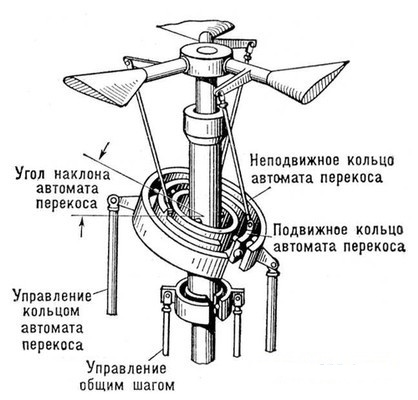

6.4. Устойчивость в смысле предсказуемости поведения
Том 1 · osnovy-sociologii-tom-1.pdf · стр. 333 (кандидат) · Кандидат страницы PDF; требуется сверка · источник: PDF/DOC данной редакции.
Содержит авторские утверждения; их фактическая достоверность оценивается отдельно.
6.4. Устойчивость в смысле предсказуемости поведения
Как было сказано ранее, объективной основой управления является субъективная способность управленца предвидеть поведение объекта управления под воздействием: внешней среды, собственных изменений объекта, управления. Это приводит к понятию:
Устойчивость в смысле предсказуемости поведения объекта (процесса) в определённой мере под воздействием: внешней среды, собственных изменений объекта (процесса), управления.
Как объективное явление — это свойство объекта управления (реального или потенциального) в восприятии субъектом-управленцем (или претендентом в управленцы) самого́ объекта и его взаимоотношений со средой.
Т.е. в явлении «устойчивость в смысле предсказуемости» сливаются воедино и объективность бытия объекта управления (либо объективная возможность осуществления проекта), и субъективизм его восприятия конкретным индивидом. Как понятие это — ключевое понятие теории и практики управления.
Однако прежде, чем обсуждать эту специфическую разновидность устойчивости, необходимо рассмотреть сложившееся понимание устойчивости как объективного явления. В большинстве случаев в науке устойчивость определяется как способность объекта (процесса), на который оказывается возмущающее воздействие, выводящее его из некоего режима, в котором контрольные параметры объекта (процесса) неизменны, — после снятия этого воздействия — возвращаться к тому режиму, в котором он пребывал до оказания на него возмущающего воздействия. Устойчивость в таком понимании может охватывать полный перечень контрольных параметров, которыми характеризуется поведение объекта, но может охватывать только некоторую выборку из полного перечня. Это определение распространяется практически на все явления безотносительно к природе самих явлений.
Данному определению явления устойчивости сопутствует понятие «запас устойчивости». Оно основывается на том, что при превышении возмущающим воздействием некоторой величины, объект, устойчивый в указанном смысле при меньших значениях возмущающего воздействия, может утрачивать это свойство. Но запас устойчивости в каждом конкретном случае выражается своеобразно, и в каждом конкретном случае параметр, определяемый термином «запас устойчивости», должен быть метрологически состоятельным.
Примеры:
- Устойчивость — неустойчивость:
<!-- -->
Сложенный из листа бумаги самолётик-стрела — аэродинамически устойчив (т.е. сам возвращается к углам своей ориентации относительно вектора скорости набегающего потока воздуха), благодаря чему летит, в общем-то, по предсказуемой гладкой траектории: при некоторой сноровке им можно попасть в заранее намеченное место.
Листья деревьев имеют иную форму и, опадая осенью с ветвей, иначе обтекаются потоком воздуха, летят по криволинейной ломано-прерывистой траектории и падают в непредсказуемое место (это хорошо видно в безветренное время).
<!-- -->
- Запас устойчивости:
<!-- -->
Бумажный самолётик-стрела, если его просто уронить, — вне зависимости от своей ориентации по отношению к вертикали — под воздействием возникающих на его поверхности аэродинамических сил прекращает падение, подобное падению листа, и начинает планировать — главное, чтобы хватило начальной высоты. Т.е. он аэродинамически устойчив во всём диапазоне возможных отклонений от режима устойчивого планирования, и, с оговоркой о начальном запасе высоты, его запас аэродинамической устойчивости неограничен.
В отличие от бумажного самолётика-стрелы, история авиации знает примеры реальных самолётов, аэродинамические компоновки которых оказывались таковы, что, если в полёте угол атаки1 (или крена) превысит некоторое критическое значение, то самолёт начнёт падать почти так, как падает осенний лист (это явление называется в авиации «плоский штопор»2).
Критический угол атаки, по превышении которого самолёт сваливается в плоский штопор либо в пикирование, для выхода из которых требуется управление3, — одна из возможных мер запаса устойчивости режима нормального полёта.
При опрокидывании предмета, стоящего на твёрдой поверхности (например, табуретки), он теряет устойчивость, когда момент сил (тяжести и равнодействующей реакций опоры) изменяет свой знак, после чего момент названных сил начинает способствовать дальнейшему опрокидыванию предмета даже в случае исчезновения накренившей предмет силы. Одна из возможных мер запаса устойчивости в этом случае — механическая работа, которую необходимо совершить для того, чтобы привести предмет в положение, в котором момент сил тяжести и равнодействующей реакций опоры изменяет свой знак.
Однако в теории и практике управления применимость приведённого выше определения устойчивости носит ограниченный характер. Дело в том, что в жизни встречаются объекты и процессы, которые сами по себе свойством устойчивости не обладают (т.е. обладают нулевым запасом устойчивости); либо их запас устойчивости настолько близок к нулю, что в практических задачах его можно считать нулевым, а сами объекты (процессы) — неустойчивыми, но при этом:
Организация соответствующего управления может придать устойчивость течению процессов, которые без управления (или при несоответствующем управлении) оказываются неустойчивыми.
Наиболее широко известным примером такого рода организации соответствующего управления, придающего устойчивость заведомо неустойчивому процессу, является вся история конструирования и строительства вертолётов одновинтовой схемы4. Хотя практически все видели такие вертолёты хотя бы в кино, но большинство не задумывается и не знает, что обеспечивает возможность полёта такого вертолёта.
Дело в том, что, если вращающийся винт перемещается в направлении, перпендикулярном оси своего вращения, то воздушный поток по разные стороны от оси вращения с разными скоростями набегает на лопасти винта. Вследствие этого на лопастях винта (если углы атаки лопастей одинаковые) возникают разные по величине аэродинамические силы, которые порождают кренящий момент. По этой причине вертолёт с таким несущим винтом во время полёта обречён завалиться на один из бортов и после этого, потеряв подъёмную силу, «упасть камнем»; практически же он вообще оказался бы не способен взлететь. В терминах теории управления это означает, что желательный режим функционирования объекта управления объективно неустойчив.
Для того чтобы вертолёт одновинтовой схемы мог летать, требуется обнулить кренящий момент. Наиболее эффективный способ достичь этого — изменять угол атаки лопастей несущего винта в процессе его вращения так, чтобы лопасть, перемещающаяся в направлении полёта, имела меньший угол атаки, нежели лопасть, перемещающаяся в направлении, обратном направлению полёта: в этом случае там, где скорость набегающего на лопасть потока выше, — угол атаки лопасти меньше и возникает подъёмная сила меньшей величины; а там, где скорость набегающего на лопасть потока ниже, — угол атаки лопасти больше и возникает подъёмная сила большей величины; вследствие этого при определённом соотношении углов атаки при прохождении лопастями несущего винта разных секторов ометаемого ими круга — можно управлять величиной кренящего момента и направлением его действия (последнее позволяет вертолёту лететь вперёд или боком, зависать на месте и т.п.).

Задача управления углами атаки лопастей при вращении несущего винта вертолёта была решена инженером Борисом Николаевичем Юрьевым (1889 — 1957). В 1911 г. он опубликовал статью, в которой описал схему одновинтового вертолёта с рулевым винтом и автоматом перекоса лопастей несущего винта. Изобретение им «автомата перекоса» — устройства, обеспечивающего управление изменением угла атаки лопастей несущего винта при его вращении, (на схеме вверху) — открыло пути к тому, что вертолёт одновинтовой схемы с управляющим винтом на хвостовой балке стал реальностью. И ныне именно эта схема вертолёта получила наиболее широкое распространение благодаря своей простоте, надёжности и превосходству по весовой отдаче5 в сопоставлении её с другими схемами.Есть и другие примеры, когда организация соответствующего управления придаёт устойчивость процессу, объективно неустойчивому в отсутствии управления или неустойчивому при несоответствующем управлении.
Приведённый пример показывает, что явление «устойчивость» в традиционном понимании этого термина — частный случай более общего явления: устойчивости в смысле <u>предсказуемости поведения объекта в определённой мере</u> под воздействием внешней среды, собственных изменений объекта, управления, — поскольку в основе организации такого рода соответствующего управления неустойчивыми процессами (объектами) лежит именно решение задачи о предсказуемости поведения объекта в указанном смысле.
Этот термин, определяющий явление «устойчивость в смысле предсказуемости…», многословен, однако в нём нет «лишних слов».
Примеры к пониманию разных аспектов этого явления во множестве даёт авиация:
Так посадка самолёта на аэродром с полосой длиной 2 километра и шириной 100 метров в безветрие при ясной видимости — это одни требования к квалификации лётчика; а посадка того же самолёта при сильном боковом порывистом ветре, на тот же аэродром ночью в ливень или в снегопад — требования к квалификации лётчика совсем иного порядка.
Это пример субъективной обусловленности явления устойчивости по предсказуемости квалификацией лётчиков.
Но он же — пример обусловленности явления устойчивости по предсказуемости самим объектом, поскольку разные типы самолётов по-разному чувствительны к погодным условиям при выполнении взлёта и посадки и обладают разными характеристиками управляемости, по какой причине каждый тип самолёта требует переподготовки в общем-то квалифицированных лётчиков.
Полёты на рекордную дальность в 1920 — 1930‑е гг. — пример обусловленности устойчивости по предсказуемости внешней средой. Их результаты во многом были обусловлены погодой, поскольку, если ветер попутный, то экономия топлива — можно улететь дальше. Но если вместо ожидаемых по прогнозу благоприятных для установления рекорда погодных условий возникает встречный шторм (а скорость ветра в нём того же порядка, что и скорости самолётов тех лет) и плюс к нему обледенение, то повышенный расход топлива неизбежен, — может не состояться не только рекорд, но возможно, что придётся сажать самолёт «на брюхо» в поле, на лес или в море.
Однако если полёт — обычный полёт в системе функционирования воздушного транспорта, то точность всевозможных прогнозов погоды может быть существенно ниже, поскольку дальность перелёта задаётся гарантированно в пределах запаса топлива с учётом возможностей повышенного расхода топлива при встречном ветре, необходимости ухода на запасной аэродром, ожидания в воздухе очереди на посадку и т.п.
Но это — пример не только обусловленности устойчивости по предсказуемости внешней средой, но и обусловленности определённой меры точности прогноза самой задачей: полёт на рекордную дальность либо обычный полёт в пределах развитой аэродромной сети требуют разной точности прогнозов погоды.
Самолёт управляем на основе того, что его поведение предсказуемо для лётчика. Зимой 1941 г. в период битвы за Москву стояли очень сильные морозы. В это время имела место серия катастроф советских бомбардировщиков СБ. Все эти катастрофы произошли по одному сценарию: самолёты с полной бомбовой нагрузкой (безопасность подъёма которой была установлена и на испытаниях, и в ходе эксплуатации на протяжении 7 лет) рано утром уходили на старт, разбегались, отрывались от земли и, набрав не более 50 метров высоты, падали камнем. Спустя несколько часов, днём такие же самолёты с аналогичной бомбовой нагрузкой благополучно взлетали и уходили на задания точно так же, как и самолёты, вылетавшие утром, но с других аэродромов.
Анализ обстоятельств катастроф показал, что все погибшие самолёты базировались на полевые аэродромы и в период ночного понижения температуры покрывались так называемым игольчатым инеем (в нём кристаллики льда стоят перпендикулярно поверхности, на которой выпал иней). Перед вылетами иней с самолётов никто не счищал…
После выяснения этого обстоятельства в Центральном аэрогидродинамическом институте были проведены продувки в аэродинамических трубах, которые показали, что иголочки инея настолько ухудшали аэродинамическое качество6 самолёта, что по выходе из зоны, в которой влияния поверхности земли увеличивало подъёмную силу7, подъёмная сила резко уменьшалась и оказывалась недостаточной для того, чтобы самолёт мог держаться в воздухе.
Это — пример потери устойчивости по предсказуемости поведения самим объектом управления, хотя и вызванной последствиями воздействия на него внешней среды. Упоминавшаяся ранее гибель первого советского реактивного самолёта Би‑1 — тоже результат потери устойчивости в смысле предсказуемости поведения вследствие особенностей конструкции Би-1, общего уровня развития аэродинамики в те годы и неадекватности организации работ по проектированию принципиально новой техники.
Практика — критерий истины, и в данном случае:
Объекты (процессы) управляемы только в том диапазоне параметров, характеризующих объективность объекта и среды и субъективизм управленца, в котором объекты (процессы) устойчивы в определённой мере по предсказуемости своего поведения под воздействием: внешней среды, собственных изменений, управления.
Управляемость — свойство объекта управления (замкнутой системы), его способность быть управляемым. В практике управления управляемость характеризуется показателями реакции объекта (замкнутой системы) на возмущающие воздействия среды, на внутренние изменения, на управление. Понятно, что все показатели должны быть метрологически состоятельны, а перечень характеристик управляемости — всегда конкретика.
В основе управляемости лежит решение задачи о предсказуемости поведения объекта (процесса) в определённой мере под воздействием: внешней среды, собственных изменений объекта (процесса), управления. Это касается как природных, так и искусственных объектов (процессов).
После того, как дано представление об устойчивости в смысле предсказуемости поведения объекта, можно дать ещё одно определение полной функции управления: полная функция управления представляет собой решение задачи об устойчивости в смысле предсказуемости поведение объекта под воздействием внешней среды, внутренних изменений и управления, осуществляемое сначала в психике субъекта-управленца, а потом — практически.
Если не вдаваться в рассмотрение профиля крыла, его характеристических точек и линий, то угол атаки это — угол в продольной плоскости симметрии самолёта между проекцией на неё вектора скорости набегающего потока и следом на ней «плоскости» крыла; либо ещё примитивнее — угол наклона «плоскости» крыла по отношению к вектору скорости набегающего потока.↩
Причём из режима падения в плоском штопоре далеко не всякий самолёт способен выйти за счёт средств нормального управления. Для того, чтобы такой самолёт можно было вывести из плоского штопора, на нём необходимо устанавливать специальные устройства — например специальные парашюты, которые подтормаживая хвост, переводят самолёт из плоского штопора в режим пикирования, в котором восстанавливается нормальная управляемость самолёта, после чего противоштопорный парашют сбрасывается.
Сваливание в плоский штопор вследствие ошибок пилотирования — причина гибели нескольких авиалайнеров Ту-154 со всеми находившимися на их борту (последний случай — гибель рейса «Пулковских авиалиний» 22 августа 2006 г. под Донецком). Эта особенность Ту-154 была известна ещё на стадии проектирования, по какой причине опытные экземпляры, проходившие испытания, были снабжены противоштопорными парашютами. Однако с целью увеличения весовой отдачи и экономичности лайнера их не стали устанавливать на серийные самолёты, предполагая, что квалифицированные лётчики не будут допускать полётов на углах атаки, близких к критическим.↩
Если управление не требуется, то реальный самолёт по своим аэродинамическим характеристикам аналогичен бумажному самолётику-стреле. Так советский истребитель Як-3 (времён Великой Отечественной войны), если срывался в пикирование из-за превышения критического угла атаки, набрав в пикировании скорость, сам выходил из него.↩
Вертолёт одновинтовой схемы имеет:
один несущий винт, который вращается вокруг вертикальной оси, — он создаёт подъёмную силу и силу тяги в направлении полёта;
один рулевой винт, расположенный на хвостовой балке, который вращается вокруг горизонтальной оси, перпендикулярной оси вращения несущего винта, — он предназначен для компенсации реактивного момента от вращения несущего винта и тем самым — для предотвращения вращения фюзеляжа вертолёта в направлении, противоположном направлению вращения несущего винта, а также — для изменения ориентации вертолёта по курсу.↩
Весовая отдача — отношение массы полезной нагрузки к полной массе летательного аппарата (термин унаследован от времён ранее введения в действие системы единиц СИ, когда весовые единицы были более употребительны или считались эквивалентными единицам измерения массы).↩
Аэродинамическое качество — отношение подъёмной силы к силе аэродинамического сопротивления движению в направлении полёта.↩
Так называемый «экранный эффект» представляет собой — увеличение аэродинамического качества при движении крыла (или иной аэродинамической компоновки) вблизи поверхности по отношению к значению аэродинамического качества того же крыла при его движении вдали от поверхности. Для движения в режиме действия «экранного эффекта» предназначены экранопланы.↩